Edit Mode - Stroke Menu
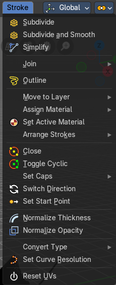
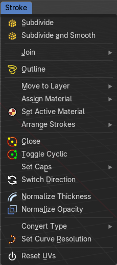
The menu content changes dependant of the Select mode. In Select mode Stroke a few menu items are not displayed. Since they do not work in that mode.
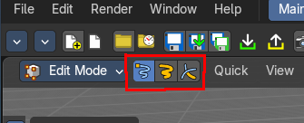
Subdivide
Subdivides the selected grease pencil geometry.
Last Operator Subdivide
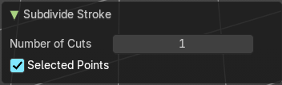
| Entry | What it does |
|---|---|
| Number of Cuts | Number of subdivision cuts. |
| Selected Points | Limits the effect to only the selected points within the stroke. |
Subdivide and smooth
Subdivides the selected grease pencil geometry, and smoothens it.
Last Operator Subdivide
Number of Cuts
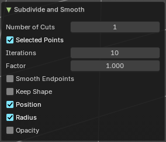
Number of subdivision cuts.
| Entry | What it does |
|---|---|
| Selected Points | Limits the effect to only the selected points within the stroke. |
| Iterations | How often to smooth. |
| Factor | The smoothing factor |
| Smooth Endpoints | Smoothen the endpoints. |
| Keep Shape | Try to keep the original shape. |
| Position | The operator affects the points location. |
| Radius | The smooth radius around vertices. |
| Opacity | The smooth opacity. |
Simplify Strokes - Sub Menu
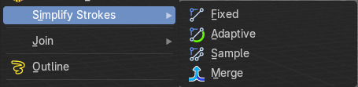
Stroke mode. Simplify the stroke.
| Entry | What it does |
|---|---|
| Fixed | Deletes every second point in the stroke, except the start and end points. |
| Adaptive | This method uses an algorithm called RDP algorithm (Ramer-Douglas-Peucker algorithm) for points deletion. The algorithm tries to keep the shape with the remaining points. |
| Sample | Samples points along the shape of the stroke, and increases the length of the edges. |
| Merge | Simplify the stroke by merging vertices closer than a given distance. |
Last Operator Simplify Stroke
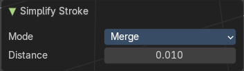
The simplify strokes operators share the same last operator.
Mode
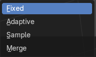
The method.
| Entry | What it does |
|---|---|
| Steps (Fixed) | How much levels of simplifying. |
| Factor (Adaptive) | How strong the simplification should be performed. |
| Length (Sample) | The sample length. |
| Distance (Merge) | The distance. Below this value the vertices gets merged. |
Join - Sub Menu
| Entry | What it does |
|---|---|
| Join and Copy | Copy the selection in the new stroke. |
| Join | Move the selection to the new stroke. |
Adjust last operator Join Selection
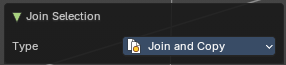
Type
Choose the join method.
Outline
Convert selected strokes to perimeter.
Adjust last operator Outline
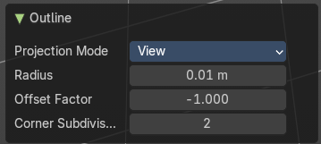
Projection mode
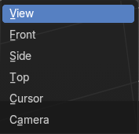
How to project the stroke.
| Entry | What it does |
|---|---|
| Radius | How big. |
| Offset Factor | Offset from the stroke. |
| Corner Subdivisions | How much subdivisions at corners. |
Move to Layer – Sub Menu
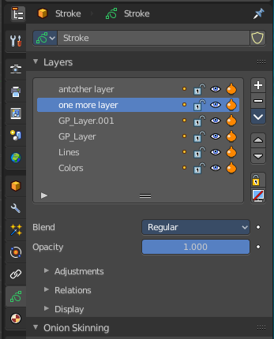
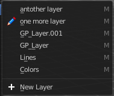
Move the current selected stroke to another grease pencil layer. It lists the current layers.
New Layer
New Layer button adds a new grease pencil layer.
Last Operator Move Strokes to Layer
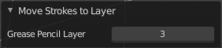
Grease Pencil Layer
Internal the layers are enumerated. So here you move by number.
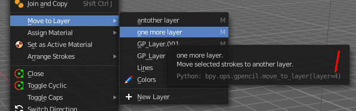
The number of a layer can be found out in the tool tip, in the Python part of it.
Assign Material – Sub Menu
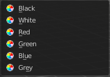
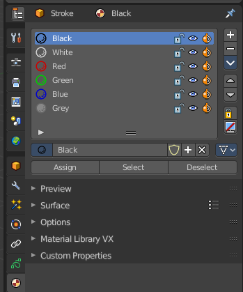
Assign a new material to the current selected stroke geometry.
The materials can be found and edited in the Properties editor. Here you can also create new materials.
Last Operator Change Stroke Color
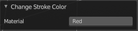
Material
The materials are defined by its name. So when you want to use another material, then change the name here.
Set as active material
Sets the current selected material as the active material.
Arrange Strokes - Sub Menu
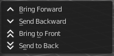
Changes the drawing order of the strokes in the 2D layer.
| Entry | What it does |
|---|---|
| Bring Forward | Moves the selected points/strokes upper the next one in the drawing order. |
| Send Backward | Moves the selected points/strokes below the previous one in the drawing order. |
| Bring to Front | Moves to the top the selected points/strokes. |
Send to Back
Moves to the bottom the selected points/strokes.
Last Operator Arrange Stroke
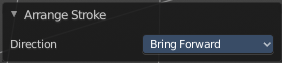
Direction
Choose the method again.
Close
Closes the current stroke by connecting the first vertice with the last vertice by a stroke. See also Toggle Cyclic.
Toggle Cyclic
When the curve is open, then it Closes the current stroke by connecting the first vertice with the last vertice by a stroke. When the curve is closed, then it removes the connection between first and last vertice, and makes the curve open.
Last Operator Set Cyclical State
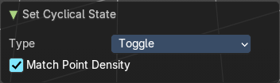
| Entry | What it does |
|---|---|
| Type | Choose the method again. · Close all: Close all open selected strokes. · Open all: Open all closed selected strokes. · Toggle: Close or Open selected strokes as required. |
| Create geometry | When enabled, points are added for closing the strokes like when using the Close tool. If disabled, the stroke is closed with just one edge. |
Set Caps - Sub Menu
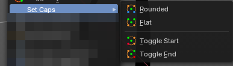
Toggles if the start and endpoints of the strokes are rounded or flat.
Default
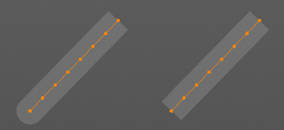
Sets stroke start and end points to rounded (default).
| Entry | What it does |
|---|---|
| Both | Toggle stroke start and end points caps to flat or rounded. |
| Start | Toggle stroke start point cap to flat or rounded. |
| End | Toggle stroke end point cap to flat or rounded. |
Last Operator Set Caps Mode
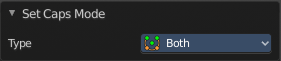
Type
Choose the method again.
Switch Direction
Switches the direction of the stroke geometry.
Set Start Point
Select which point is the start point of the grease pencil curve. This defines the order of point indices, useful for Geometry nodes.
Note: Not available in stroke selection mode.
Normalize Thickness
Adjust the thickness of the stroke.
Normalize Opacity
Adjust the opacity of the stroke.
Last operator Normalize Stroke
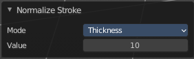
This last operator works for both tools, Normalize Thickness and Normalize Opacity.
Mode
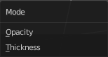
Adjust thickness or opacity.
Value
The value to adjust the opacity or thickness.
Set Spline Type – Sub Menu
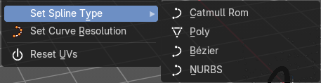
Set the curve type.
Set Curve Resolution
Set the resolution of the curve.
Ajust last operator Set Curve Resolution
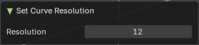
Resolution
The resolution that you want to choose.
Set Stroke Type - Sub Menu
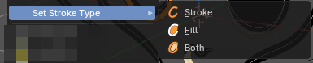
Defines how selected points are interpreted on the Grease Pencil.
| Entry | What it does |
|---|---|
| Stroke | Points are treated as part of a line stroke. |
| Fill | Points are treated as part of a filled region. |
| Both | Points contribute to both stroke and fill. |
Reset UVs
Reset UV Transformation values to zero.
Join Fills
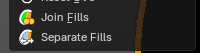
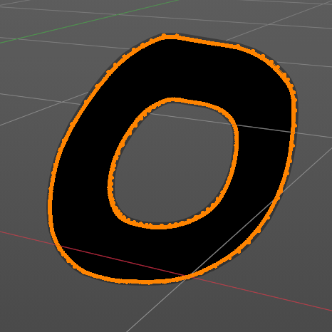
Combines selected strokes into a single fill region. If they overlap, it will create a subtractive boolean. Useful for merging complex shapes into one continuous fill for coloring or shading.
- Creates unified fill areas, even across multiple strokes.
– Automatically generates holes if overlapping strokes define enclosed spaces.
Separate Fills
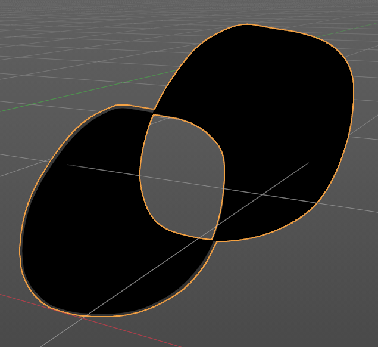
Splits a combined fill back into individual fill regions. Useful for isolating specific areas for recoloring, shading, or animation. Restores stroke-based independence after a join operation.